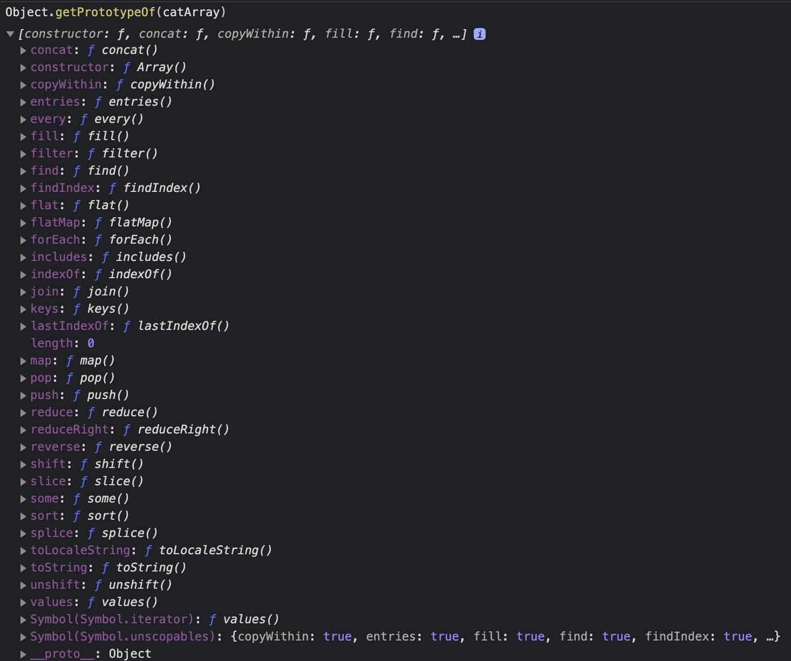
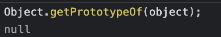
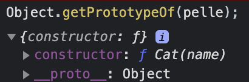

🗃️Javascript og objektet
Objektene i javascript er i praksis lik datastrukturen ordbok (🙈 dictionary). Javascript har vel egentlig ingen
formening om klasser slik klassiske objektorienterte språk har. Joda.. vi har selvfølgelig nøkkelordet class og uteseendet
på det som kommer etter, men egentlig så er jo dette bare syntaktisk sukker 💏 som skjuler litt av virkeligheten.
Javascript er prototypisk, slik at klassen er ikke en klasse slik som i klassisk OOP: en oppskrift på hva et objekt er, men mer som en levende ting som det nye objektet har en link til, eller en relasjon med. Prototypen kan påvirke tilstanden til andre objekter og lever i beste velgående når programmet kjører og kan både få nye og bli fratatt gamle metoder.
Den levende modellen blir liggende bak i prototypekjeden.
❓ Hva er en prototypekjede
Prototype Chain.. prototypekjede.. jeg prøver meg.. 😺
Når du f.eks lager objekter eller arrays (lister? matriser? hva blir egentlig ett godt norks ord for det?) i Javascript, så delegeres oppførselen fra prototypen. Den arver på en måte det som trengs:
const catArray = ['Pelle Katt', 'Pusur', 'Tom'];
og så kjører du Object.getPrototypeOf(catArray):

Lots of goodies.
Prototypekjeden er altså slik vi får til arv i Javascript. Vi bygger nye objekt basert på gamle. PÅ den måten kan vi ordne til
noe OOP-lignende greier. Du når, som du ser, prototypen via Object.getPrototypeOf(objektetDuVilSjekkeUt), eller evt. objektetDuVilSjekkeUt.__proto__.
🏗️ Lage objekter i Javascript
1️⃣ Object constructor:
Trenger vel ikke si så mye?
var object = new Object();
2️⃣ create meteoden på Object:
Her kan du også f.eks lage et objekt uten en prototype (altså uten å linke til Object.prototype)
var object = Object.create(null);

3️⃣ Object literal, bokstavelig talt:
var object = {};
4️⃣ Med new operatøren:
Dette er i hovedsak det class gjør i bakkanten.
function Cat(name) {
this.name = name;
this.sound = function () {
console.log('mjau');
}
}
const pelle = new Cat("Pelle");
Hvis vi kjører Object.getPrototypeOf(catObj); nå:

For å bygge litt videre på den med prototypekjeden og levende objekter i kjøretiden og så videre:
Cat.prototype.claws = true;
ville ført til at pelle også fikk denne propertien.
5️⃣ Med `class' syntaksen
Denne kom i ES6 og ligner på det man kjenner igjen fra den tradisjonelle objektorienterte programmeringen med klasser som en oppskrift.
class Cat {
constructor(name) {
this.name = name;
this.sound = function () {
console.log('mjau');
};
}
}
const pelle = new Cat("Pelle");
Den er, som du nå vet, helt lik 4️⃣ 😎